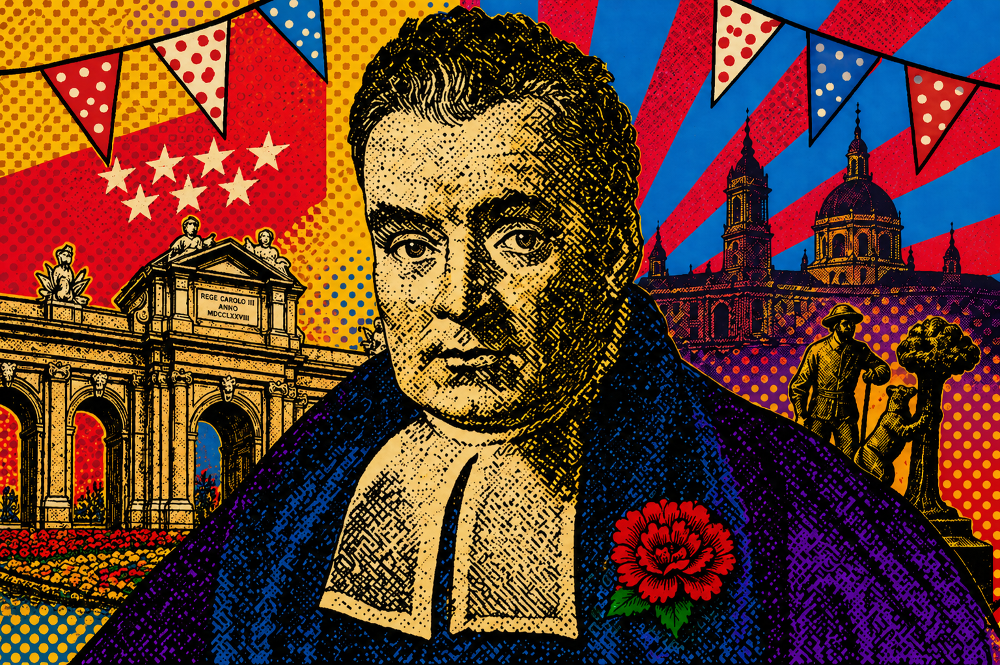
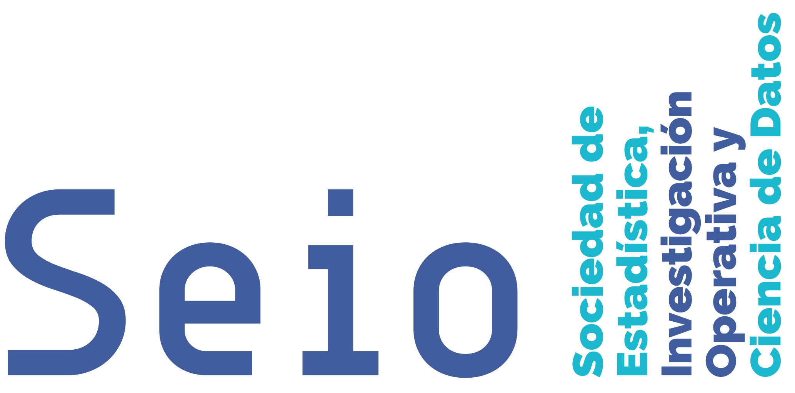

CUNEF Universidad, Madrid • June 4–5, 2026
II International Workshop on Bayesian Statistics
Organised by the Bayesian Working Group of SEIO and CUNEF Universidad.



Workshop Overview
Workshop overview
The II International Workshop on Bayesian Statistics will take place on 4–5 June 2026 at CUNEF Universidad, Madrid. The workshop is organised by the Bayesian Working Group of SEIO and CUNEF Universidad.
The meeting is planned as a single-track event with plenary talks, contributed sessions, coffee breaks, lunches, and a closing session. Registration is free thanks to the support of SEIO and CUNEF Universidad.
Scientific program
Keynote speakers
Documents
Workshop documents
The book of abstracts and the workshop brochure are available as PDFs.